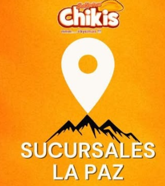
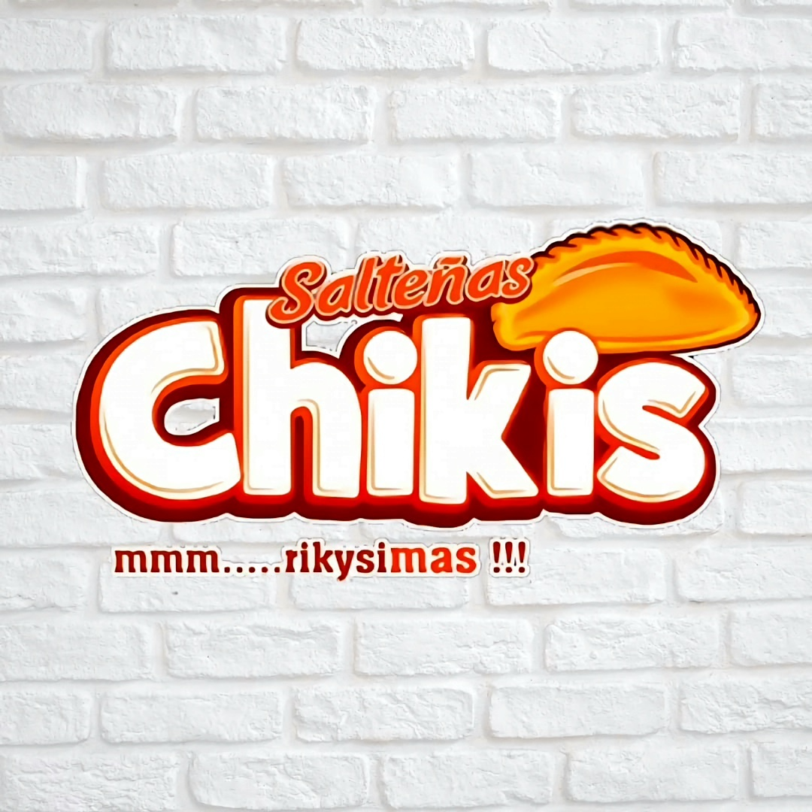
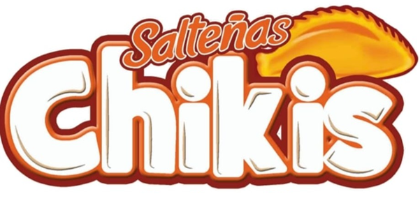
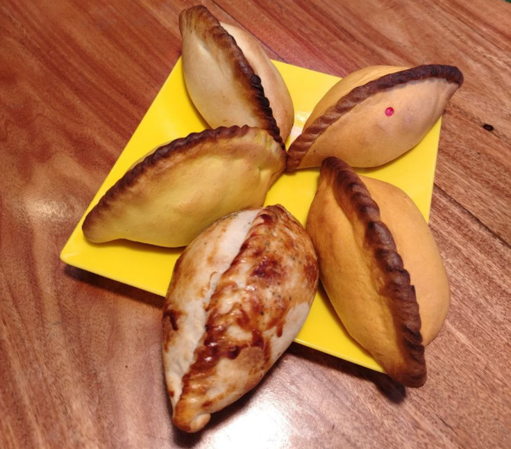

Central
01



Cinco variedades, tres sucursales y una receta familiar que lleva años conquistando los paladares paceños.
Mira cómo se vive la experiencia Chikis: masa preparada con amor, ingredientes frescos seleccionados cada mañana y el sabor inconfundible que ya forma parte de La Paz.
Video oficial
Tres puntos estratégicos en La Paz para servirte